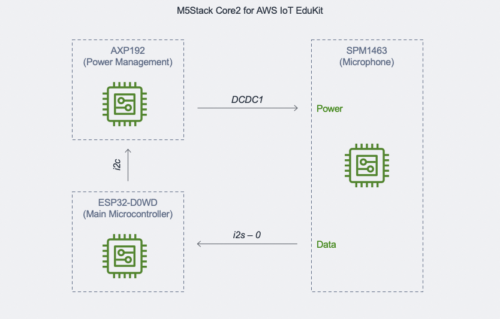
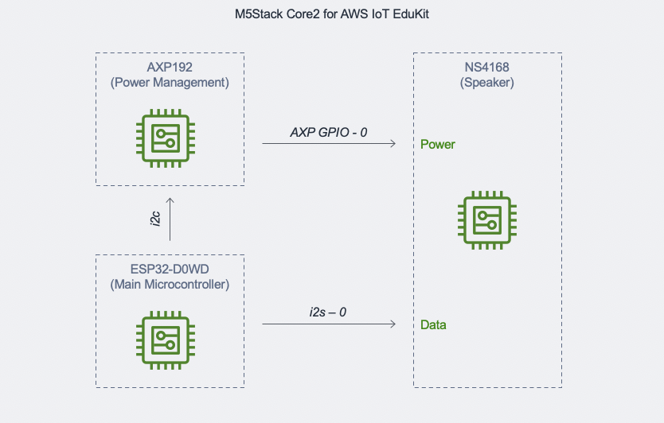

The audio library provides convenience functions for the SPM1423 microphone and the speaker powered by the NS4168 1-Watt amplifier over I2S. The I2S bus requires that the initialization and use of the peripheral on the bus is assigned to a dedicated processor core. The reason for this is that I2S and I2C attaches an interrupt to one of 32 interrupt vectors available per core. Attempting to initialize or access the peripheral without affinity to a specific core will most likely cause a hard fault almost immediately or at some point in time. The speaker or microphone must be enabled prior to performing the respective write or read operation.
The default audio recording and playback configuration for both the microphone and speaker is mono (right only) channel, 16-bit, at 44,100Hz.
- Note
- The microphone cannot be accessed at the same time as the speaker since they share a common clock pin (GPIO0). The library is currently not thread-safe and the application must exercise caution when reading/writing to the peripherals.


To enable the BSP hardware features, open the KConfig menu using the command pio run --environment core2foraws --target menuconfig from within the root of the project directory in your PlatformIO terminal window and go to the menu Component Config --> Core2 for AWS hardware features to set the features you want to enable.
Example
TThe following example creates a FreeRTOS task that's pinned to Core 1, which intializes the SPM1423 microphone, reads 307,200 bytes of audio to a dynamically allocated buffer in the external RAM, disables the microphone, enables the speaker, plays back the buffer from the speaker, disables the speaker, and then loops again after waiting 2 seconds.
#include <stdint.h>
#include <stdio.h>
#include <freertos/FreeRTOS.h>
#include <freertos/task.h>
#include <esp_log.h>
static const char *TAG = "MAIN_AUDIO_DEMO";
static void record_and_playback_task( void *pvParams )
{
ESP_LOGI( TAG, "\tStarting microphone test" );
size_t read_length = 307200;
int8_t *mic_buffer = ( int8_t * )heap_caps_malloc( read_length * sizeof( int8_t ), MALLOC_CAP_SPIRAM );
while( true )
{
memset( mic_buffer, 0, read_length );
if ( err == ESP_OK )
{
size_t was_read_length;
if ( err == ESP_OK )
ESP_LOGI( TAG, "Read %d bytes from mic!", was_read_length );
if ( err == ESP_OK )
ESP_LOGI( TAG, "Wrote %d bytes to the speaker!", was_read_length );
}
vTaskDelay( pdMS_TO_TICKS( 2000 ) );
}
free( mic_buffer );
vTaskDelete( NULL );
}
void app_main( void )
{
xTaskCreatePinnedToCore( &record_and_playback_task,
"audioTest",
configMINIMAL_STACK_SIZE * 4,
NULL,
2,
( TaskHandle_t * ) NULL,
1
);
}
Core2 for AWS IoT EduKit general hardware driver APIs.
esp_err_t core2foraws_init(void)
Initializes enabled hardware features.
esp_err_t core2foraws_audio_speaker_enable(bool state)
Enables or disables the device speaker driver.
esp_err_t core2foraws_audio_mic_read(int8_t *sound_buffer, size_t to_read_length, size_t *was_read_length)
Writes audio to the provided buffer from the microphone.
esp_err_t core2foraws_audio_mic_enable(bool state)
Enables or disables the device microphone driver.
esp_err_t core2foraws_audio_speaker_write(const uint8_t *sound_buffer, size_t to_write_length)
Writes the provided buffer for speaker playback.
Preprocessor Macros
Functions
{kind=link}
{kind=link}